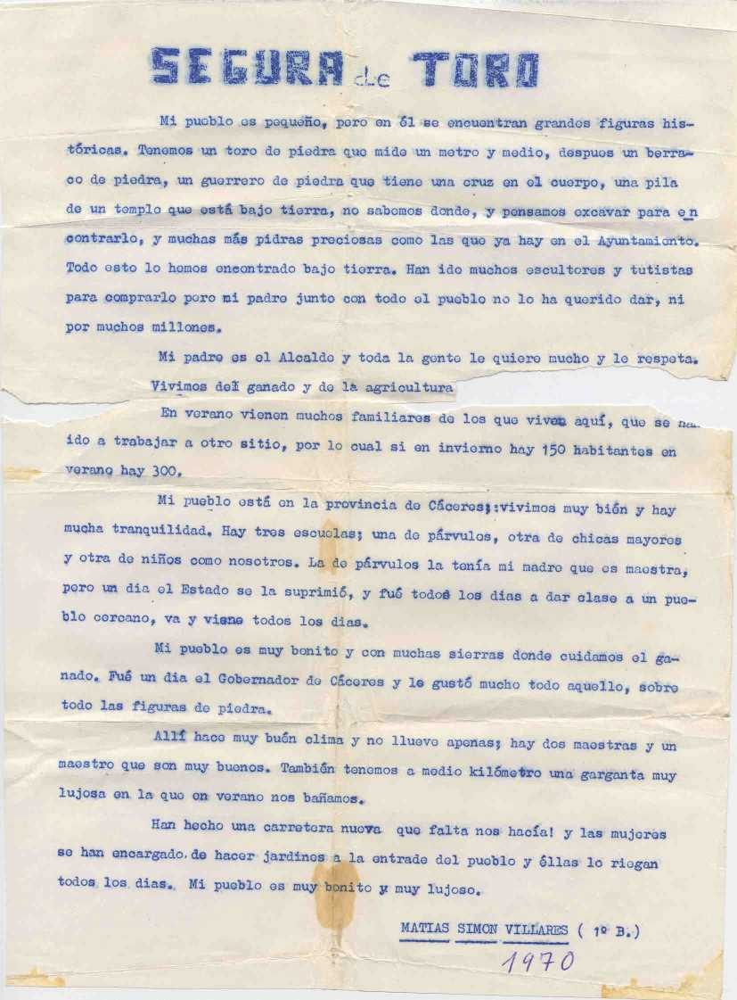

 |
|---|
Corría el año 1970. Los mayores Pedro Girón, Diego Rueda, Jesús Manzano, Agustín Montero, Diosdado Simón, etc, organizaron un concurso de Redacción entre todo el Colegio, entonces estaba completo, desde primero hasta PREU, y ahí estoy yo , con mis diez añitos, en primero de bachiller, ganando el concurso y me la publicaron en el periódico que ellos editaban, se llamaba EL CHISMOSO. ( Las manchas de café son auténticas, ya que en el comedor , con el nerviosismo, Jesús Manzano, mi jefe de mesa, me la hizo leer a los compañeros). Joder, han pasado 36 añitos y desde entonces no he parado de escribir. Qué ilusión me hizo. |
|---|